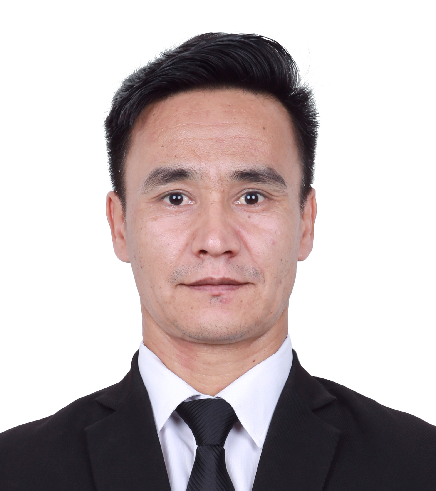

Aspiring Full-Stack Web Developer with a background in backend development and hands-on experience in building web applications. Skilled in Python, SQL, HTML, CSS, and JavaScript, with a growing understanding of frontend and backend technologies. Currently advancing my expertise in full-stack web development through practical, project-based learning, including hands-on capstone projects. Passionate about developing responsive, user-friendly, and scalable web applications, solving technical challenges, and continuously expanding my knowledge of modern web technologies.
Software Engineer, Alttera Academy, 2023 - 2024
Responsibilities: Developed and maintained web applications, collaborated with cross-functional teams, and
Internship, Alttera Academy, 2022 - 2023
Responsibilities: Assisted in software development projects, gained hands-on experience in coding and debugging, and contributed to team meetings and discussions.
Legal Advisor, Ministry of Justice, 2011 - 2015
Responsibilities: Provided legal advice and guidance, drafted legal documents, and represented clients in legal proceedings.